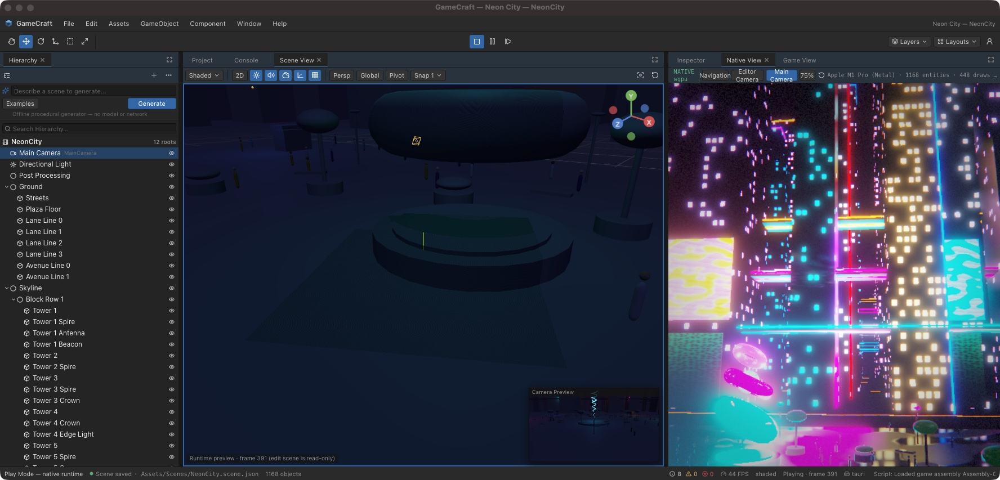

A free and open-source game engine
Make 2D and 3D games in a full-featured editor, write gameplay in C#, and export to desktop, web, Android and XR. GameCraft runs entirely on your own computer. There is no account to create and nothing to pay.
macOS on Apple Silicon. Windows and Linux can be built from source.

Everything in one editor
GameCraft combines a native engine written in Rust, the .NET runtime for scripting, and a desktop editor. The parts are developed together and tested together.
Rendering
Physically based rendering on Metal, Vulkan, DirectX 12 and WebGPU, with post-processing, reflection probes, baked lighting and a node-based shader editor.
C# scripting
Scripts compile when you save and run on .NET 10. Hot reload keeps the values in your fields, and you can attach a debugger.
Physics
3D and 2D rigid bodies, joints, a character controller, raycasts and a collision matrix with 32 layers.
Animation
Animator state machines, skeletal animation from glTF and FBX, blend shapes, inverse kinematics and a Timeline editor.
Effects
Particle systems with collisions, a GPU particle graph with up to a million particles, and trail renderers.
Multiplayer
Networked objects, synchronised variables and remote procedure calls over UDP, with host, server and client modes.

A familiar editor
Hierarchy, Inspector, Scene and Game views, a Project browser and a Console, arranged in panels you can dock anywhere. If you have used a modern game editor before, you already know where things are.
Add components, edit values while the game runs, build prefabs, and press Play to run the scene in the real engine rather than a preview.
using UnityEngine;
public class Spinner : MonoBehaviour
{
[SerializeField] float speed = 90f;
void Update()
{
transform.Rotate(0f, speed * Time.deltaTime, 0f);
}
void OnTriggerEnter(Collider other)
{
Debug.Log("Collected by " + other.name);
Destroy(gameObject);
}
}Bring your Unity projects
GameCraft can import Unity scenes, prefabs, materials, animations and .unitypackage files, and it runs scripts written against the common parts of the UnityEngine API without changes.
An import report lists everything that was converted and everything that was skipped.
Export to every platform you can test
One project builds for several targets from the editor or the command line. Exported games are self-contained and do not need GameCraft to be installed.
| Desktop | macOS, Windows, Linux |
|---|---|
| Web | WebAssembly with WebGPU |
| Mobile | Android (arm64) |
| XR | OpenXR headsets |
| License | MIT, with no royalties or fees |
News
Live build sessions
The editor can now be driven by a command file, so whole scenes can be built from a script while you watch. The Neon City demo was made this way.
GameCraft 0.3
Unity project import, the UnityEngine and UnityEditor compatibility layers, post-processing, Shader Graph, Timeline, and new Windows, Linux, Web, Android and XR targets.
Get the source
GameCraft is developed in the open on GitHub. Browse the repository.
Report a problem
Found a bug or missing feature? Open an issue.
Contribute
Changes are welcome. Every change needs a test. How to contribute.